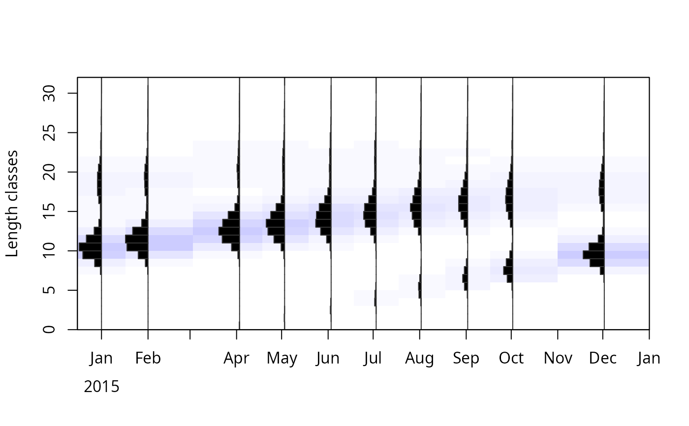
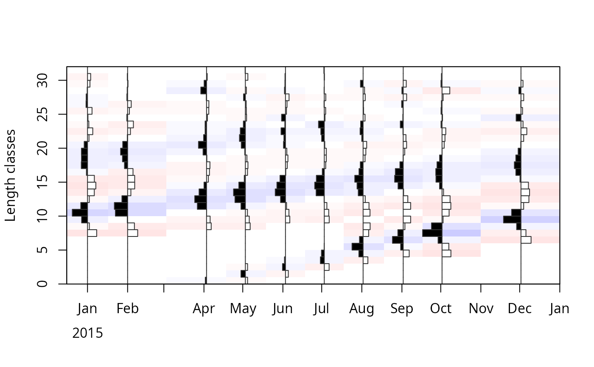

Synthetic length-frequency data as generated by the function
lfqGen from the fishdynr package (Taylor 2016). Can be used by
ELEFAN or ELEFAN_SA.
The data is generated with the following von Bertalanffy growth parameters:
K = 0.47 +/- 0.2 (CV)
Linf = 33.7 +/- 0.05 (CV)
C = 0
ts = 0
t_anchor = 0.25 (Time when yearly recruitment pulse occurs; e.g. 0 = Jan 1, 0.25 = Apr 1, 0.5 = Jul 1st, 0.75 = Oct 1)
Further settings include:
L50 = 10 (length at 50% prob. of capture via trawl net)
wqs = 3 (width between 25% and 75% prob. of capture quantiles; i.e. wqs = 0 is knife-edge selection)
M = 0.8 (Natural mortality rate)
harvest_rate = 1.3 (Fishing mortality rate)
Usage
data(synLFQ6)Format
A list of class lfq consisting of:
dates dates of sampling times (class Date),
midLengths midpoints of the length classes,
catch matrix with catches/counts per length class (row) and sampling date (column).
Source
Taylor, M (2016). fishdynr: Fisheries science related population dynamics models. R package version 0.2. https://github.com/marchtaylor/fishdynr
Examples
data(synLFQ6)
# plot of length frequencies
plot(synLFQ6, Fname = "catch")

# plot of restructured length frequencies
synLFQ6 <- lfqRestructure(synLFQ6, MA = 7)
plot(synLFQ6, Fname = "rcounts")
